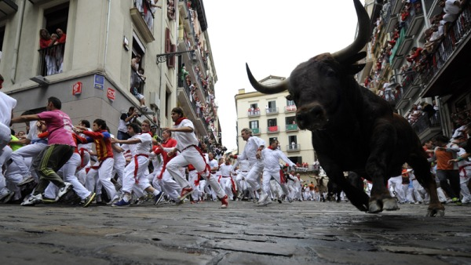
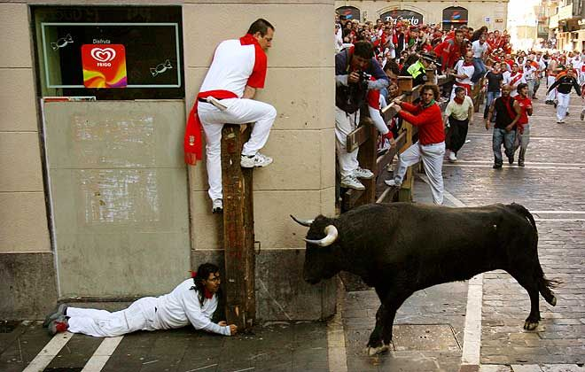
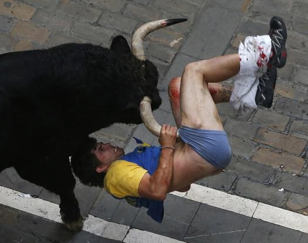
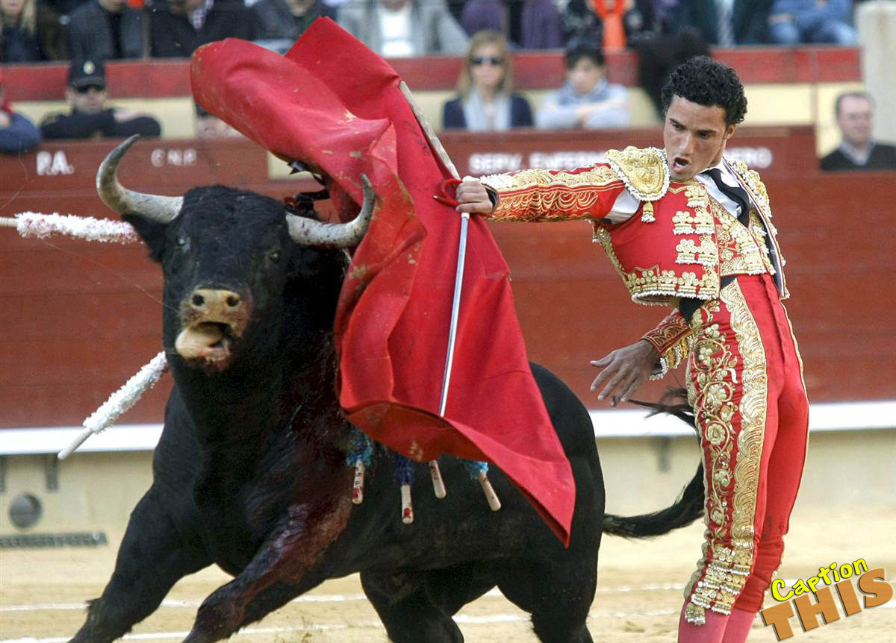
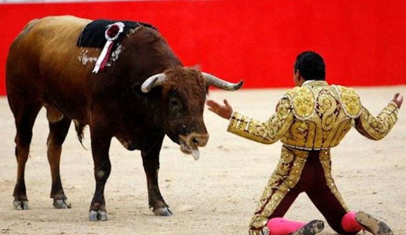
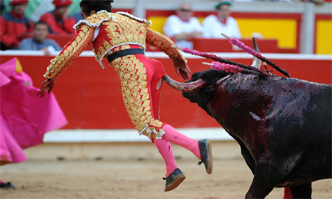

El Encierro De Toros
El encierro de los toros se hace en muchos lugares de España, pero el más famoso es el que realiza en Pamplona en el marco de las fiestas en honor de San Fermín. Los grandes se construyen barricadas para mantener a los toros en su camino. Entonces los gentes de todas las edades corren delante de los toros para mostrar su valentía. La primera carrera es el 7 de julio y uno se lleva a cabo todos los días de la fiesta a las 8 de la mañana. Los participantes deben ser mayores de 18 años de edad. Todo el evento se lleva a unos 4 minutos. Los toros corren de sus plumas y termina al llegar a la plaza de toros.
  El Encierro De Toros
Las corridas de toros es una tradición en España. En una corrida de toros varios toreros ejecutar una serie de movimientos formales en el ring con el toro. Los movimientos tienen un significado o el nombre y los movimientos que no dependen de lo que la escuela de las corridas de toros venÍan. Por lo general hay 3 matadores y cada uno de ellos luchan 2 toros. Los matadores tienen un equipo de 6 auxiliares que ayudan en la lucha. Hay tres partes en la lucha.
El primero es el Tercio de Varas, donde el toro se pone en la arena y ponen a prueba su temperamento con una capa roja y oro. Esta sección termina con una puñalada en la parte posterior del cuello toros para debilitarlo.
La siguiente etapa es Tercio de banderillas, donde los asistentes del matador intentarán colocar palillos de púas agudos en los hombros toros. Esto debilita aún más el toro. el matador también puede colocar algunas púas, pero lo hará con más estilo.
La etapa final es tercio de muerte. Esto es cuando el torero tendrá una capa roja y obligar al toro para acusarlo. Después de una serie de pases al toro es asesinado con una puñalada en el corazón. Si la gente cree que el toro tuvo un buen desempeño que pueden solicitar al presidente de sobra ella. Si esto ocurre, el toro se salva y vuelve al rancho viene.
  